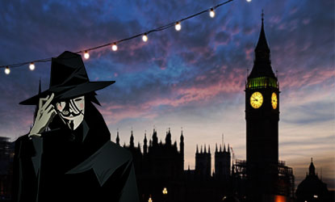

O estado espalhava por veículos mídiaticos o medo de uma guerra nuclear, na série V de Vingança, já eram tratados assuntos atuais, como a homossexualidade, crescimento de minorias, autoritarismo militar, e que também traziam grande irritação por parte do governo. A história foi passada em Londres, pois o autor achava que o mercado americano já estava superfaturado, cheio demais, e eles queriam algo “genuinamente britânico”. Tudo se passa em uma Inglaterra do futuro, nos anos 90 depois do fim da terceira guerra mundial, a Inglaterra estava em um estado de caos, estava sendo comandada por um regime fascista, autoritário, onde pessoas não tinham direitos, existia uma grande censura da mídia, sendo assim difícil se opor contra o governo. O Protagonista V, se apresenta como um justiceiro mascarado, não revelando quem é, seu nome, se é homem ou mulher, nem seus traços corporais. V luta contra o estado, um dos poucos dos opositores do governo autoritário da época, tendo então como seu maior inimigo, Adam Sutler. A HQ oferece em sua história muita idéia sobre conceitos políticos, vemos a luta de um governo ditatorial contra um caminho de liberdade, de uma pessoa que não vê outra solução, se não a anarquia. Não sabermos quem é V talvez seja o diferencial disso tudo, a sensação de suspense prende ainda mais, e depois descobrir que ele é uma idéia, nos passa que o governo não vai ser confrontado frente a frente, tiro a tiro, mas sim com idéias, com pessoas pensando juntas e agindo juntas, afinal, se “nos anos 90” em situação caótica uma idéia já fez tudo isso, imagina em tempos atuais, com conexões mundiais em tempo real, o que uma idéia seria capaz.
História
Reino Unido, 1997
| Personagem | Autor no filme |
|---|---|
| V | Hugo Weaving |
| Evey Hammond | Natalie Portman |
| Adam Sutler | John Hurt |
| Eric Finch | Stephen Rea |
| Valerie Page | Imogen Poots |
| Lewis Prothero | Roger Allam |